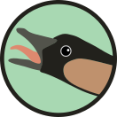
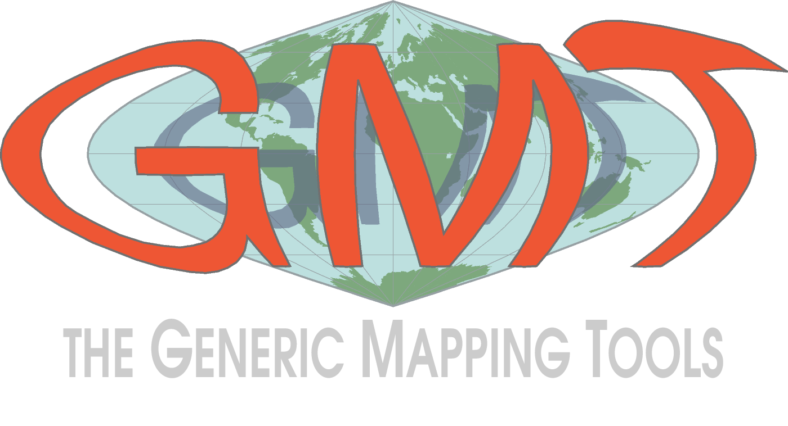

Nēnē is the side project that I use to blow off steam and experiment with
Python without the pressures of backwards compatibility and testing that my
research software work requires.
It’s also what I use to build this website.
The name is a nod to Urubu, which I
used to build my website before, and the
unforgettable time I spent in Hawai’i.
GitHub
Website

Fatiando provides Python libraries for data processing, modeling, and inversion
across the Geosciences.
It is built by a community of geoscientists and software developers with a
passion for well-designed tools and helping our peers.
I’ve been working on Fatiando since around 2010 when I started my MSc.
It’s been the main focus of my career and it permeates all aspects of my work,
from research to teaching.
GitHub
Website
GMT is one of the most widely used open-source software projects in the Earth
Sciences. It’s been around for decades and is to many the very symbol of
open-source. I had the pleasure to
join the GMT team during my postdoc working
on PyGMT.
Recently, my contributions to GMT and PyGMT have been more on the community and
guidance side than actual coding.
Thankfully, they don’t really need me for the coding parts.
GitHub
Website

A collection of command-line programs for modelling the gravitational attraction
of spherical prisms (tesseroids).
This was my first open-source project. I started working on Tesseroids as part
of my BSc dissertation project with
Naomi Ussami and
Carla Braitenberg.
Through Tesseroids, I learned about documentation, unit tests,
cross-compilation, version control, and more.
GitHub
Website
